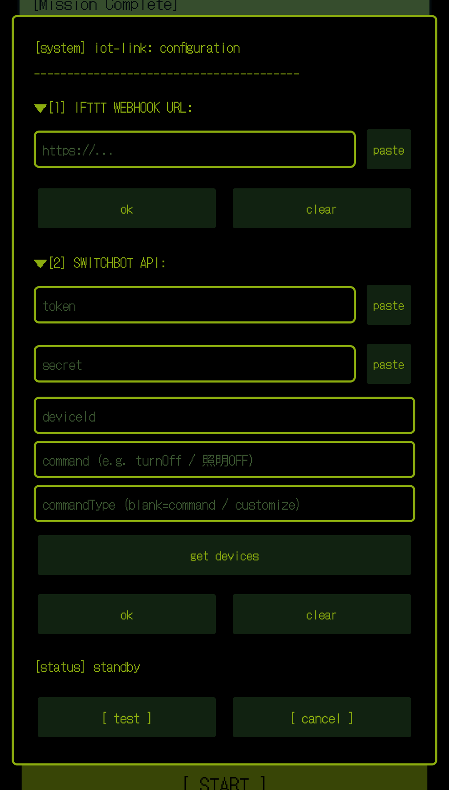

※ 本機能におけるSwitchBot APIおよびIFTTTの利用は、 すべてユーザー自身のアカウントおよび責任において行われるものです。 本アプリは、ユーザーが入力した接続情報に基づき通信を代行送信する補助ツールであり、 開発者が各サービスのAPIを直接利用・運用するものではありません。 各APIの利用にあたっては、SwitchBot社およびIFTTT社が定める利用規約に従ってください。
ULTRAプラン加入後、アプリ内の [ultra]double-barrel-config ボタンから
以下の設定画面（iot-link: configuration）を開けます。

[1] IFTTT WEBHOOK URL
IFTTTで作成したWebhook URLを貼り付ける欄です。
paste でクリップボードから直接貼り付けできます。
入力後 ok で保存、clear で消去します。
[2] SWITCHBOT API
SwitchBotの開発者オプションで取得した
token（トークン）と secret（クライアントシークレット）を入力します。
get devices をタップすると deviceId が自動入力されます。
command には実行したい命令（例: turnOff）、
commandType は通常空白のままでOKです。
[status]
現在の接続状態が表示されます（standby = 待機中）。
[ test ] / [ cancel ]
[test] で設定内容を即時実行してテストできます。
対象の機器が反応すれば設定成功です。
[cancel] で画面を閉じます。
※ [1]・[2] はどちらか一方のみの設定でも動作します。 入力されている方だけがトリガーされます。
1. IFTTT (Webhooks)
IFTTTページにて以下のアプレットを作成。
※現在、IFTTT側でWebhooks（Receive a web request）を利用するには、 有料プラン（IFTTT Pro等）の契約が必要です。
作成後、SwitchBotアプリ設定画面の「サードパーティーサービス」で IFTTTとのリンク（相互連携）を設定しておきます。
作成完了後、画面下部の「Your webhook URL」に表示されるURLを、
Sleep Boyの [1] IFTTT WEBHOOK URL に入力し、OKをクリック。
[test] をクリックし、対象の機器が消灯すれば成功です。
2. SwitchBot API
SwitchBotアプリで開発者オプションを有効にし、
を取得して、それぞれSleep Boyの該当項目に入力。
その状態で [get devices] をタップすると、
自動的にデバイスIDが入力されます。
※複数存在する場合は一番上のIDが入るため、 対象が違う場合は該当するIDを手入力してください。
turnOff を入力（※大文字小文字・スペースなしに注意）OKをクリックして保存。
[test] をクリックし、対象が消灯してレスポンス
（statusCode: 100）が出れば成功です。
[test] でエラーがなければ、設定されている情報に基づき、
タイマー切れまたは睡眠検知となった瞬間に、1および2のシステム
（入力されているもの）をトリガーしにいきます。
* All use of the SwitchBot API and IFTTT through this feature is performed under the user's own account and responsibility. This Application acts solely as an assistant tool that sends requests based on the connection information entered by the user — the developer does not directly use or operate these services' APIs. When using each API, please comply with the respective terms of service set forth by SwitchBot and IFTTT.
After subscribing to the ULTRA plan, tap the [ultra]double-barrel-config button
in the app to open the configuration screen (iot-link: configuration)
shown below.
[1] IFTTT WEBHOOK URL
Paste the Webhook URL you created on IFTTT here.
Use paste to insert directly from your clipboard.
Tap ok to save, or clear to erase.
[2] SWITCHBOT API
Enter the token and secret (Client Secret)
obtained from SwitchBot's Developer Options.
Tap get devices to auto-fill the deviceId.
For command, enter the action to execute
(e.g. turnOff). Leave commandType blank
in most cases.
[status]
Shows the current connection state (standby = idle).
[ test ] / [ cancel ]
Tap [test] to execute your settings immediately.
If the target device responds, your setup is working.
Tap [cancel] to close the screen.
* You may configure only [1] or only [2] — whichever is filled in will be triggered.
1. IFTTT (Webhooks)
Create the following applet on the IFTTT website.
* As of now, using Webhooks (Receive a web request) on IFTTT requires a paid plan (such as IFTTT Pro).
After creating the applet, go to the SwitchBot app's settings screen and link it with IFTTT under "Third-Party Services."
Once set up, copy the URL shown under "Your webhook URL"
at the bottom of the page, and paste it into
[1] IFTTT WEBHOOK URL in Sleep Boy, then tap OK.
Tap [test] — if the target device turns off,
the setup was successful.
2. SwitchBot API
Enable Developer Options in the SwitchBot app, and obtain:
Enter each value into the corresponding field in Sleep Boy.
With these entered, tap [get devices] —
the Device ID will be filled in automatically.
* If multiple devices exist, the topmost ID will be used. If this isn't the correct device, enter the appropriate ID manually.
turnOff (note: case-sensitive,
no spaces)Tap OK to save.
Tap [test] — if the target device turns off
and the response returns statusCode: 100,
the setup was successful.
If [test] completes without errors, the configured
systems (1 and 2, whichever are set) will automatically trigger
the moment your timer expires or sleep is detected.